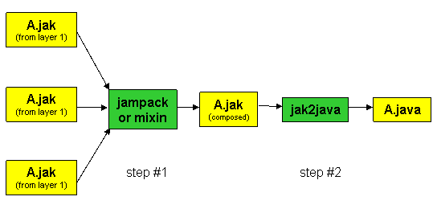

|
|
The jak2java Tool |
jak2java is a tool that converts .jak files that were produced by jampack or mixin into pure .java files for subsequent javac compilation and execution. It is invoked via the command-line as:
Usage: j2j.Main [-d] [-s] [-b] [-v] [-x null] [-quiet] [-verbose] [-base <base-working-directory>] [-help] <source file>
-d : debug mode for parser
-s : send output to stdout
-b : bootstrap from JTS to FOP
-v : FOP (exit(1)) or JTS (exit(0)) version
-x : override default file extension
-quiet : disables verbose output
-verbose : enables verbose output (default)
-base : specifies base working directory
-help : prints this helpful usage message
Thus, the typical way to use our tools is (a) to compose .jak files, and (b) translate each such .jak file to a .java file by jak2java.

In this document, we review features of jak2java and how it performs its translations. This is useful as (for the foreseeable future) you will be using Java debuggers to debug your code, and knowing how jak2java works will help you understand the relationship betwee
In .jak files and .java files. In general, the translations that jak2java performs is simple. The exceptions are constructors and translating state machines.
| This document covers the following topics: |
In other documents, you will find discussions on:
|
Translation of New, Overrides, SoUrCe, Super, and State Machine Declarations |
The new and overrides modifiers are used to indicate methods that are new to a refinement chain or that override an existing method of a refinement chain. Their utility arises only during the composition of .jak files, and not during the translation of .jak to .java. So, jak2java simply erases the new and overrides modifiers when translating to Java.
SoUrCe statements are produced by the mixin tool when composing .jak files. (SoUrCe statements are not generated by jampack). Because these statements are used only by the unmixin tool and also to indicate to programmers the layer file in which a particular block of code originates, jak2java simply erases these statements when translating to Java.
The Super construct is identical to the Java super construct, and was introduced only because our tools are preprocessors that lack symbol table information. Super is translated directly to the Java super construct.
These translations are summarized below:
| .jak file | .java translation |
| new void foo() { ... } | void foo() { ... } |
| overrides int bar() { ... } | int bar() { ... } |
| SoUrCe extLayer "C:!...!midsm.jak"; | |
| Super(int,String).mymethod(5,"e") | super.mymethod(5,"e") |
| Super(int,String)(5,"e"); | super(5,"e") |
The translation of state machine specifications into Java code is discussed in the document on state machines.
Constructors (again) |
For jampack-produced .jak files, constructors are translated directly as written and nothing special occurs. For mixin-produced .jak files, the translation is more complicated, because here is where the inheritance of constructors in refinement chains is realized. There are two key problems to address: the propagation of constructors down the refinement chain, and the propagation up the refinement chain.
Propagating Constructors Downwards |
Constructors are inherited in refinement chains. The terminal entity (e.g., class, state-machine) of a refinement chain has all the constructors introduced by its parents. The following illustrates the idea and the translations made by jak2java; the constructors highlighted in yellow were propagated.
| .jak file | .java translation |
SoUrCe RooT Aspect1 "something1";
abstract class MyClass$$Aspect1 extends EventType {
MyClass$$Aspect1(String name, int cons ){ }
}
SoUrCe Aspect2 "something2";
abstract class MyClass$$Aspect2 {
MyClass$$Aspect2(String name){ }
}
SoUrCe Aspect3 "something3";
public class MyClass extends MyClass$$Aspect2 {
}
|
abstract class MyClass$$Aspect1 extends EventType {
MyClass$$Aspect1(String name, int cons ){ }
}
abstract class MyClass$$Aspect2 {
MyClass$$Aspect2(String name){ }
// inherited constructors
MyClass$$Aspect2 ( String name, int cons ) { super(name, cons); }
}
public class MyClass extends MyClass$$Aspect2 {
// inherited constructors
MyClass ( String name ) { super(name); }
MyClass ( String name, int cons ) { super(name, cons); }
}
|
Propagating Constructors Upwards |
Any element of a refinement chain (e.g., class, state machine) can refer to constructors of the chain's superclass. Because Java doesn't propagate constructors, jak2java has to. Whenever a Super(..)(..) construct is encountered in a translation, jak2java recognizes that the corresponding constructor must be propagated up the refinement chain. The example below illustrates the idea; constructors in yellow were propagated down the chain by jak2java, the constructors in blue were propagated up the chain.
| .jak file | .java translation |
SoUrCe RooT Aspect1 "something1";
abstract class MyClass$$Aspect1 extends EventType {}
SoUrCe Aspect2 "something2";
abstract class MyClass$$Aspect2 {
MyClass$$Aspect2(int x) {
Super(int)(x);
}
}
SoUrCe Aspect3 "something3";
public abstract class MyClass extends MyClass$$Aspect2 {
MyClass(String name, int cons ){
Super(String)(name);
}
}
|
abstract class MyClass$$Aspect1 extends EventType {
// inherited constructors
MyClass$$Aspect1( String v0) { super( v0); }
MyClass$$Aspect1( int v0) { super( v0); }
}
abstract class MyClass$$Aspect2 {
MyClass$$Aspect2(int x) {
super(x);
}
// inherited constructors
MyClass$$Aspect2( String v0) { super( v0); }
}
public abstract class MyClass extends MyClass$$Aspect2 {
MyClass(String name, int cons ){
super(name);
}
// inherited constructors
MyClass ( int x ) { super(x); }
}
|
Command-Line Invocation |
jak2java takes a single argument (X .jak file) and produces X.java:
> jak2java X.jak // produces X.java
A further explanation of the command-line options:
Copyright © Software Systems Generator Research Group.
All rights reserved.
Revised: January 25, 2006.